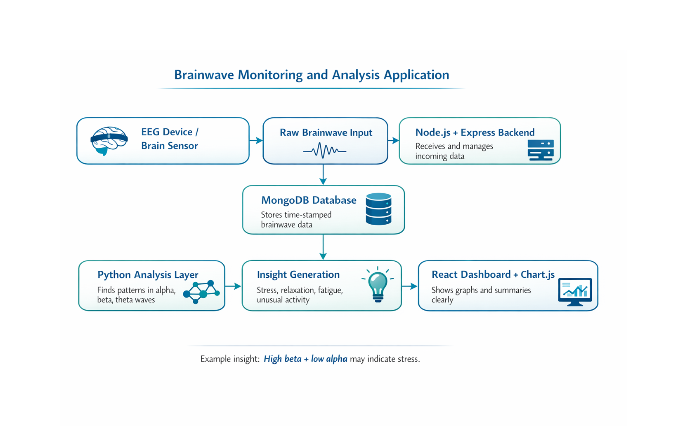

This page presents our recommended technology stack for the NeuroStack brainwave monitoring and analysis application, along with workflow explanation, sample insights, trade-offs, optimization, and future scope.
In Week 10, we focused on recommending a suitable technology stack for the NeuroStack application. The goal was not just to list technologies, but to explain why each one fits the system, how they work together, and how the overall solution supports real-time brainwave monitoring and analysis.
The proposed system is a brainwave monitoring and analysis application designed to collect, process, store, and visualize brainwave data. It aims to convert raw brainwave signals into useful insights that can support doctors, researchers, and healthcare monitoring workflows.
React.js
Interactive UI DashboardNode.js + Express.js
API Handling Real-time DataMongoDB
Flexible Storage Scalable DataPython
Data Analysis Pattern DetectionChart.js
Graphs TrendsWe selected this stack because it supports both technical performance and practical usability. React.js helps create a modern and responsive dashboard, Node.js manages continuous incoming data, MongoDB stores large and flexible brainwave datasets, Python handles analysis, and Chart.js presents the results in a visual and understandable way.
The workflow explains how raw brainwave input moves through the system and how each part of the technology stack contributes to the final output.

The system starts by collecting raw brainwave signals from an EEG device or sensor. These signals are received by the backend, stored in the database, analyzed using Python, and finally displayed on the dashboard as graphs and meaningful insights.
To demonstrate how the application could interpret brainwave data, we used a simple high blood pressure example where higher beta values and lower alpha values indicate increased stress and reduced relaxation.
| Time | Alpha | Beta | Theta |
|---|---|---|---|
| 10:00 | 8 | 30 | 5 |
| 10:01 | 7 | 32 | 4 |
| 10:02 | 6 | 35 | 3 |
This pattern suggests that the person may be under stress. In a real application, the system could convert this raw data into a simple insight for doctors or healthcare users.
The observed brainwave data shows consistently high beta activity and low alpha levels, indicating a stressed mental state with reduced relaxation. This kind of pattern may be associated with high blood pressure and can help healthcare professionals monitor the patient more effectively.
Chosen for flexibility and scalability, but it does not enforce strict relational structure like traditional SQL databases.
Works well for real-time data handling, but is not the best choice for heavy analytical processing compared to Python.
Provides a dynamic user interface, but requires more setup and component management compared to simple static pages.
If a doctor searches for patient data or brainwave history, the system should return results quickly.
What we do: Use indexing on fields like patient_id and timestamp.
This improves search speed and helps the system retrieve data without scanning everything.
If the system receives real-time brainwave updates from multiple patients, performance should remain stable.
What we do: Process data in smaller chunks, separate analysis logic, and store only required data.
This reduces overload and keeps the application responsive.
This solution adds value to NeuroStack by enabling real-time monitoring, data-driven interpretation, and better visualization of complex brainwave patterns. It supports healthcare-focused decision-making while also providing a scalable foundation for future research and product development.
This project helped us understand that choosing a technology stack is not only about naming tools. It is about connecting each technology to the actual needs of the system, thinking about trade-offs, and explaining how the full solution works in a practical way.
Overall, this technology stack provides a practical and scalable foundation for the NeuroStack application. It supports real-time processing, flexible storage, meaningful analysis, and clear visualization. More importantly, it shows how a full-stack solution can turn complex brainwave data into understandable and useful insights.